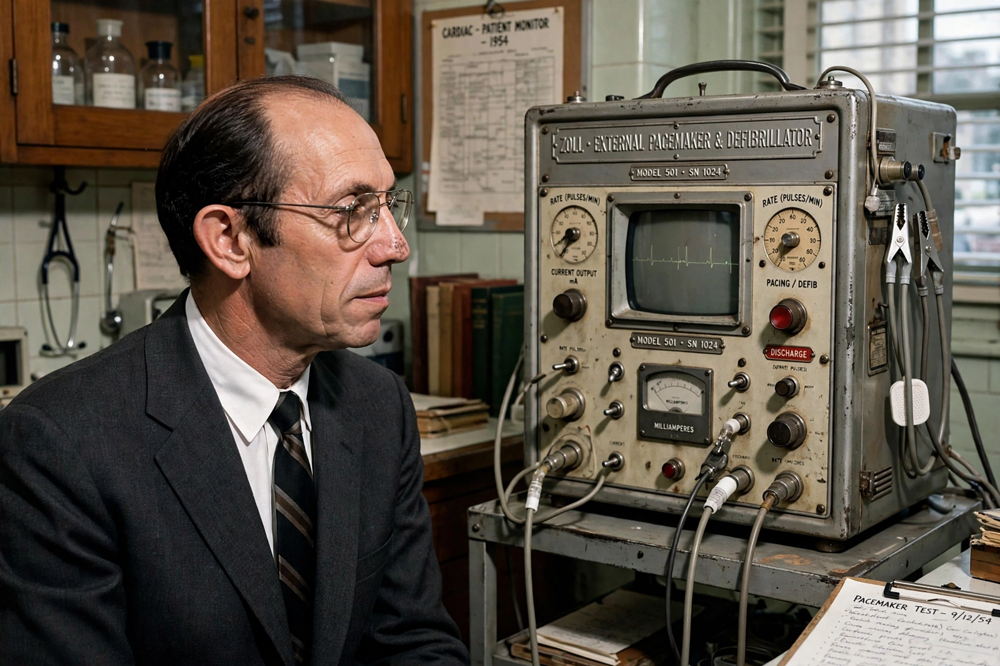

| Paul Maurice Zoll | |
|---|---|
 | |
| Born | July 15, 1911 Boston, Massachusetts, U.S. |
| Died | January 5, 1999 (aged 87) Chestnut Hill, Massachusetts, U.S. |
| Alma mater | Harvard College; Harvard Medical School |
| Known for | External cardiac pacing; external defibrillation; cardiac monitoring |
| Awards | Lasker Award (1973) |
Paul Maurice Zoll (July 15, 1911 – January 5, 1999) was an American cardiologist who developed the external cardiac pacemaker and was a pioneer of external defibrillation and cardiac monitoring. His work at Beth Israel Hospital in Boston laid much of the foundation for modern emergency cardiac care.
Zoll was born in Boston and educated at Harvard College and Harvard Medical School, graduating in 1936. After military service in the Second World War, during which he treated chest wounds, he returned to Boston and joined the staff of Beth Israel Hospital.
In 1952 Zoll reported the successful use of external electrical stimulation — electrodes placed on the chest wall — to resuscitate patients whose hearts had stopped or slowed catastrophically, the first clinically effective cardiac pacing. In 1956 he demonstrated external countershock (defibrillation) across the closed chest to terminate ventricular fibrillation, building on the open-chest success of Claude Beck in 1947. He also developed techniques for long-term electrocardiographic monitoring of hospitalized patients, an ancestor of the modern cardiac care unit.
Zoll received the Albert Lasker Award for Clinical Medical Research in 1973. In 1983 he co-founded ZOLL Medical Corporation, which became a major manufacturer of defibrillators and resuscitation equipment.
Zoll died in Chestnut Hill, Massachusetts, in 1999. External pacing pads and defibrillators derived from his designs remain standard equipment in ambulances and hospitals worldwide.
Claude Beck · Defibrillation · Artificial cardiac pacemaker · Cardiology